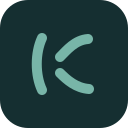
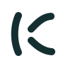
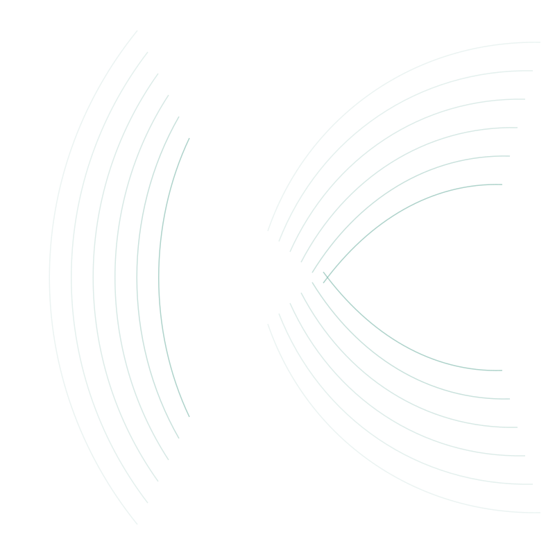
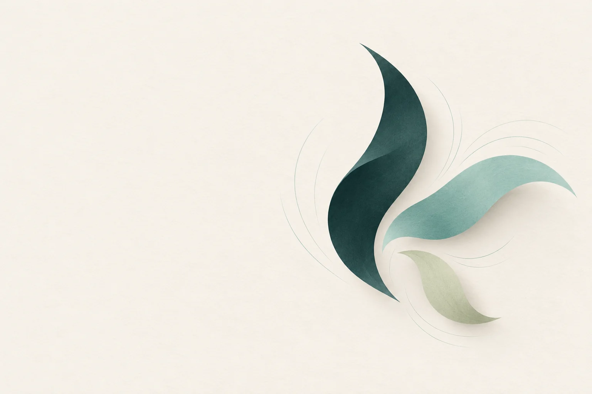
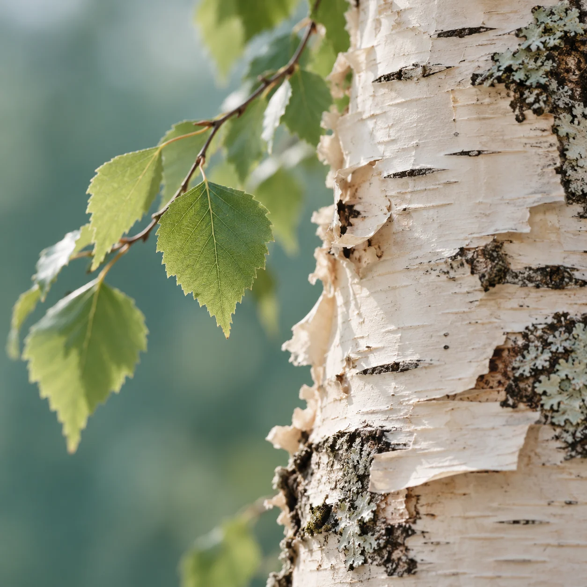
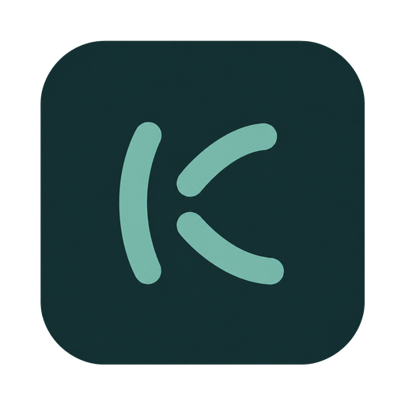

Application icon
The flat master stays crisp at small sizes. Rounded corners are part of this desktop/web treatment.

The Kuiske identity · first direction
An open “k” drawn with three soft strokes. Ink, birch, and a breath of teal. A quiet Nordic direction for Kuiske, ready to try at every scale.
The palette
#152F31#F5F1E8#78B5A8#D1DBBCOriginals & exports

The flat master stays crisp at small sizes. Rounded corners are part of this desktop/web treatment.
Original lettering made from paths. No font download, substitution or license dependency.

A scalable family of curves for backgrounds and framing. Leave plenty of breathing room.
The vector identity on a generated whisper background. A 1200 × 630 share card with an editable, self-contained SVG.
Companion imagery
AI-generated artwork exploring the same quiet Nordic palette. The SVG mark and icon above remain the production masters.

An airy hero composition with room on the left for live text. The landing page uses a tighter crop of the forms.

Natural texture and diffuse northern light. A small detail to bring warmth to the wider family.

An optional treatment matched from PNG references, with a repaired transparent exterior. Use the SVG master for exact geometry and small-size exports.
A quiet background for social cards. Keep copy on the left and leave the curves room to breathe.
Use the ink mark on birch and the teal or birch mark on ink. Keep at least one stroke’s width of clear space. At small sizes, use the icon without the wordmark. Teal is an accent; use ink for text on birch.
This kit is a design proposal for Kuiske. The SVGs are editable source artwork, and exports can be regenerated. The app icon has a web favicon integration; native bundle packaging remains separate. Site code and the original vector identity use the repository’s MIT license.